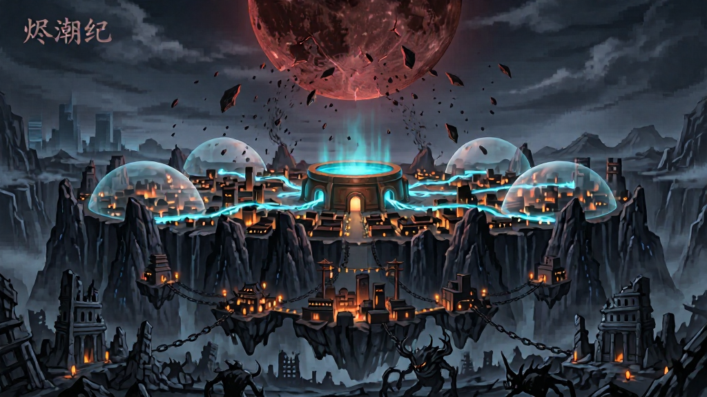
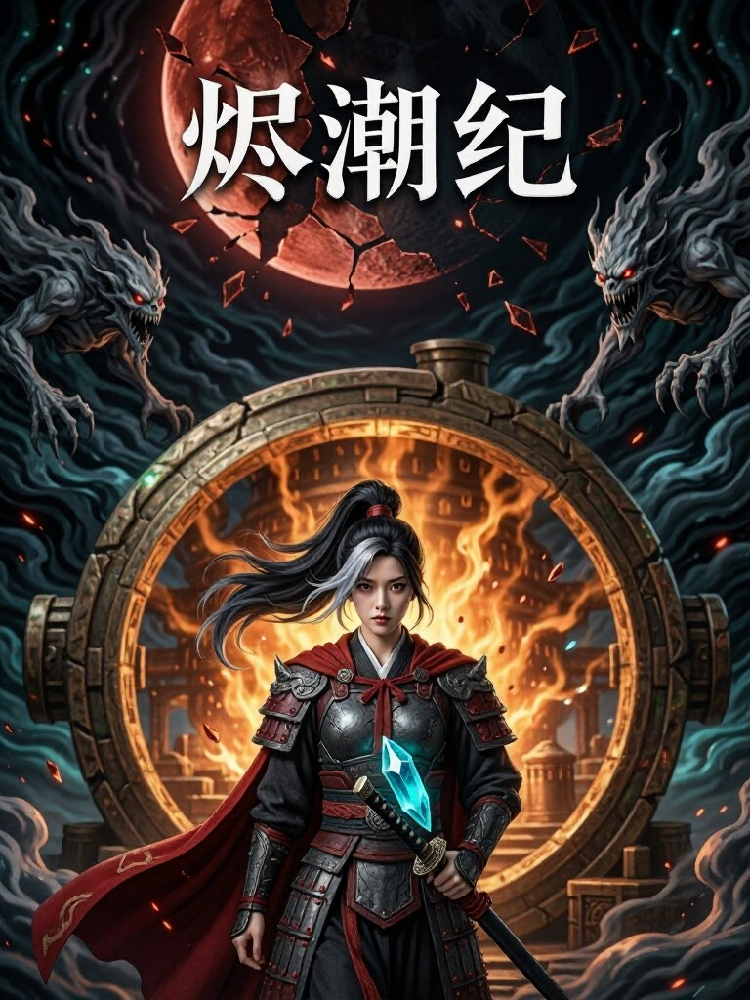
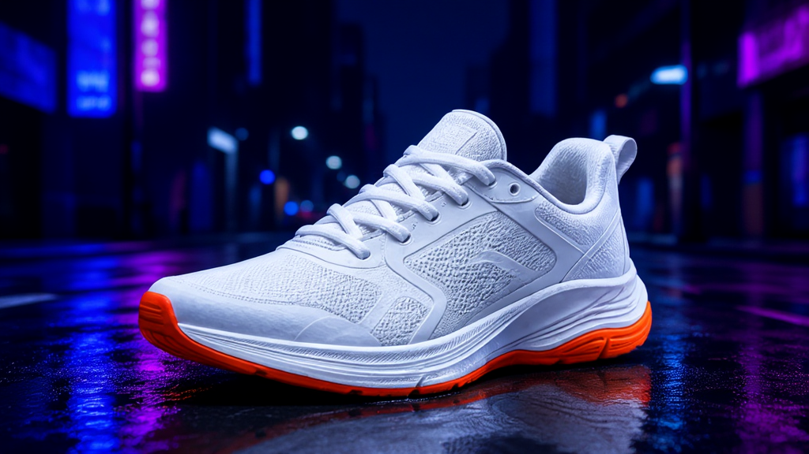
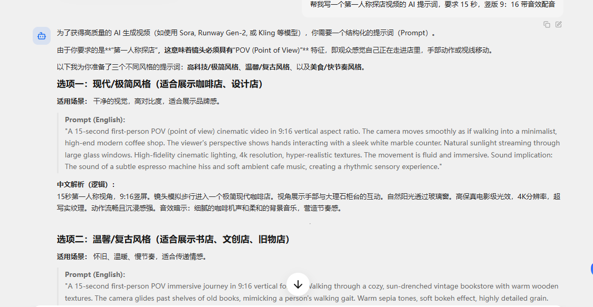

USER FEEDBACK × PRODUCT × ENGINEERING
从用户反馈，
确定优化顺序。
用户已经在真实任务中指出可用性、画质、稳定性和效率上的具体问题。本次会议聚焦逐条核对证据、明确优先级与复测标准，让产品持续完善。
会议目标
先解决阻断生成与交付的问题，再优化质量、速度和工作流；把用户反馈转为可复测的产品与研发任务。
ISSUE TRIAGE
先按问题解决，再按用户回看
优先级是本次会议的建议排序：先看是否阻断任务和真实交付，再看影响范围与复现证据。
4飞书正式反馈记录
3具名用户，跨表去重
23对应截图、成片与输入附件
定向任务 2 条、真实业务 2 条，均已读到末页；杨伟科在两张表各有一条，不能算成两位用户。另有专业 CG 导演转述 1 份、云端公测文档 1 份，来源类型不同，单列分析，不并入人数。
| 建议优先级 / 问题 | 用户证据与影响 | 研发排查与复测标准 |
|---|---|---|
| P0 · 阻断模型不可用、任务失败前置提示不足 | 杨伟科提到部分模型点生成后才提示不可用；耿顺洋报告部分图片模型生成失败。会浪费排期与用户测试时间。 | 核对可用模型清单、权限、显存和错误码；生成前提示限制，失败保留任务 ID、原因与重试入口。以两条原记录的模型与输入复测。 |
| P0 · 阻断远程断连、长任务状态不可靠 | 云端公测文档报告连续及批量运行中频繁掉线，影响挂机和交接；这是独立文档的观察，不当作两张反馈表中的新增用户。 | 保存任务状态、进度和输出，验证断线重连后不丢任务；用长任务与连续批量任务记录断线率、恢复率和失败日志。 |
| P0 · 交付质量视频模糊、脸部崩坏与规格感知落差 | 杨伟科两项视频任务模糊不可用、另两项效果较好；倪海敬报告文生视频模糊和人脸问题，图生视频相对可用；云端文档报告选 1080P 但观感较低。不是“所有视频都不可用”。 | 锁定模型、版本、输入、seed、步数与编码；核验真实分辨率、码率和人脸细节。按同任务并排比较首次可用率，而非仅报分辨率。 |
| P1 · 业务质量广告图中文字不准确 | 杨伟科真实投流任务中，图片小字出现糊字、错字、异常字；权益数字和标题错误会使投放素材返工。 | 区分模型生成文字与后期叠字；用原始投流提示词及输出图核对标题、价格与权益文字，记录可直接投放比例和人工修字耗时。 |
| P1 · 音视频质量音频不清晰、有回声 | 耿顺洋在真实业务视频中报告音频不清晰和回音；目前只有该记录，需要保留原片、生成链路和播放器环境。 | 拆分模型源音、混音、编码、播放器四段定位；原片与导出文件分别复听，检查回声是否可复现。 |
| P1 · 时延体验对话响应慢、视频长尾耗时 | 耿顺洋报告 AI 对话慢、非满血模型的 15 秒 720P 视频约 60 分钟；云端公测在另一任务中报告速度优势但质量落差。不同配置不能直接合并平均。 | 拆分排队、加载、推理、重试与传输；按同模型同任务记录 P50/P90 和可用镜头总耗时，明确速度／质量档位。 |
| P1 · 视觉质量结构、一致性与镜头语言 | 定向任务出现刀柄分离、多刀、披风缺失、能量线路数量不符、鞋色漂移、封面融合突兀；专业 CG 导演另指出影调、动画规律和手指问题，同时认可景深与微表情。 | 分图像结构、角色资产、动作连续性和摄影语言建立样片集；保留正反例，在固定输入下逐项复测，不把创作意见误写成确定技术根因。 |
| P2 · 工作流改进任务与资产复用、专业控制 | 用户建议分阶段提示词、增加“插值扩展 sigma”等工作流参数；另有历史任务、资产、简单／专业入口建议。参数方案是用户建议，尚未验证普适效果。 | 先完成 P0 交付链路，再小范围 A/B 对照参数与工作流；定义保存输入、参数、版本、局部重跑的最小产品方案。 |
会议需要定下的三件事
① P0 的责任人与复现环境；② 每个问题的任务 ID、原片和日志补齐方式；③ 修复后用哪一组原始任务复测通过。优先级不等于根因已确定，更不等于全部问题同时排期。
FEEDBACK CONTEXT
保留正反例与专业判断
问题清单之外，还要保留“哪些任务表现不错”、哪些意见是专业审美，以及哪些参数建议仍待研发复测。
PROFESSIONAL CG DIRECTOR
专业 CG 导演：海外短剧与游戏视频
这是你新增的专家观察，属于创作质量评估。现阶段保留为定性反馈，等原片、对照片和镜头参数关联后再升级为可复测结论。
可取之处：景深自然，人物微表情较好，眨眼尤其明显。
不足：AI 感重、缺少影调，视听语言单一。
对照方式：用你做的影调版本并排看同一镜头，逐项比较光比、色彩层次、镜头调度与情绪表达。未达到导演预期：动作缺少动画规律，人物手指出现崩坏。
对照方式：用你制作的分镜，逐镜核对动作起承转合、关键姿态、运动连续性和手部结构。给产品 / 技术的任务把“好看”拆成可讨论的镜头语言：影调、人物表演、动画规律、手部结构；测试时保留原片、参考分镜、提示词、模型、种子和输出版本。
反馈进入研发的最低标准
- 可追溯用户、任务 ID、成片或原始记录
- 有影响返工、时间、成本或交付后果
- 可复现设备、版本、输入、参数与日志
- 可验收修复后的量化通过标准
PRODUCT DIRECTION
产品完善的方向
依据真实任务的正反反馈，明确先修交付链路、再扩展工作流能力的顺序。

把“可生成”提升为“可交付”
已有正面样片和真实业务反馈；下一步集中改善模糊、文字、音频与稳定性，按具体任务验收，而不以单次成功替代稳定表现。
端侧与云端按任务分工
高频、可控和私有工作流可能适合本地；团队并发与弹性任务需要云端能力。用用户任务、总成本和可用率决定产品边界。
先修阻断，再做增强
模型可用性、断连和输出规格是交付链路的基础；资产复用、Agent 和复杂画布应建立在稳定任务系统之上。
把反馈变成研发可用的复测资产
保留输入、模型版本、参数、任务 ID、日志和原片；同一问题的用户观察、产品判断与技术根因分开记录。
DIFFERENTIATION · TO REFINE
如何把开源模型能力做成更明确的产品优势？
开源模型和本地运行提供了可控基础。ComfyUI 也具备工作流、模板与 API；Siltok 下一步应把部署、任务稳定性和可交付结果做成更易用的完整体验。
比 LibTV 模型更多、比云 / API 更便宜、开源就更可控、设备更强就能交付更好结果。
面向有真实视频生产任务的团队，把开源模型变成可控、可复现、成本可计算的交付流程：从部署、版本、任务、素材到失败恢复和技术支持，由产品承担复杂性。
反馈已有模糊、错字、音频回声、模型不可用和断连；云端与本地的质量差异尚未完成同条件归因。这些反馈为质量与稳定性优化提供了明确方向。
先验证一个窄场景
选一个短剧镜头或电商广告真实任务，用同一输入和验收标准对照用户现有方案，记录可用率、从提交到交付的总时间、失败与局部返工次数、每条可用内容的总成本。用同条件对照找出真实优势与短板，持续完善后再形成可信的差异化表达。
PRODUCT DESIGN REFERENCE · LIBTV
从“生成一个镜头”转向“完成一个项目”
以下是从你提供的 LibTV 产品拆解中筛选出的设计启发，不把竞品功能清单直接当作 Siltok 已有能力或近期承诺。
多镜头任务需要保存剧本、分镜、角色、参考图、生成结果和版本关系。局部出错时能定位来源、只重做受影响部分；这比再增加一个生成按钮更接近实际返工痛点。
Siltok 应验证：一个真实短剧 / 广告项目，返工时能否保留输入、参数、输出与修改链。Agent 可先搭内容骨架，创作者随后逐镜头判断、修改和验收。自然语言入口降低门槛，专业控制保障质量；两种入口服务不同熟练度，但都应落在同一个可追溯项目里。
Siltok 应验证：新人能否快速得到初稿，专业用户能否控制局部修改而不推倒重来。新用户先看“我能完成什么任务、要花多久、会消耗什么、能得到什么”。把模型名、Agent 和端侧架构放在任务价值之后，避免用户为理解技术组织方式额外付出学习成本。
Siltok 应验证：首次体验前，用户能否说清预期结果、时间与成本；结果是否值得再次使用。USER-SUPPLIED RISKS · 待复测
强工具也有五类使用代价
以下逐项保留你提供的 LibTV 缺点，作为竞品测试清单，而不是已独立确认的普遍事实。公开的 Agent Skill 用户反馈仅能佐证其中部分控制与项目管理风险，不能外推到整个网页产品。
- 长视频、复杂特效和反复生成可能快速消耗积分，低预算与低频用户的单位成片成本需实测。
- 高质量模型、去水印等与会员权益有关；“非 VIP 自动降级、效果变差”的具体规则仍需按当前套餐核对。
- 无限画布与节点工作流给专业用户控制力，也可能让新手付出连接节点和调参数的学习时间。
- 复杂分镜、长视频可能需要精确提示词与多次抽卡；中文理解偏差的频率需同任务复测。
- 复杂分屏、人物肢体、UI 细节及二维码等可读元素可能出错，后期补救成本需记录。
- 单次片段长度、复杂动作和物理动态仍有边界；长片通常要分镜生成后组织成片。
- 复杂任务或高峰时段的等待、卡顿和失败率不能只用一次成功样片判断。
- 移动端使用便利性需核对当前入口，不把“完全无移动端支持”写为定论。
- 你提到 Agent/API 与画布不同步、任务卡死、提示词截断；公开反馈另涉及项目管理与提示词改写透明度，需分场景复现。
- 节点工作流不等于帧级剪辑；复杂逻辑画面和精细修改可能仍需外部后期软件。
- Agent 入口的模型、节点与参数控制颗粒度是否足够，要与人工画布分别测试，不能混为一谈。
对 Siltok 的启示
机会不是宣称“LibTV 做不到、我们能做到”，而是在一个真实任务中验证：能否用更低的学习与返工成本、可预测的总费用和稳定交付，让用户完成作品。Siltok 自己的画质与连接问题也必须放进同一张对照表。
取舍：不写入未经独立核验的收入、客户数、定价、增长或效果数据；团队席位、积分池、完整导演台等属于后续竞品研究素材，不应越过当前稳定连接、可用输出与工作流闭环的优先级。参考：LibTV 官方网站 ↗官方 Agent Skill ↗。
CAPABILITY & PERFORMANCE
产品功能性与性能的区别
“做得到”不等于“做得好、做得快、持续做得到”。

功能性
有没有、能不能完成
例：文生视频、图生视频、工作流导入、API、资产管理质量
结果能不能交付
例：人脸、动作、文字、声音、清晰度、提示词遵循性能
完成一次需要多久
例：冷启动、P50、P90、单位时长生成时间、吞吐稳定性
能不能持续完成
例：失败率、断线恢复、重试、长任务、任务不丢容量
能服务多少人
例：并发用户、排队时长、设备调度、资源隔离可用性
用户是否会用
例：能力说明、参数保留、简单/专业模式、错误提示768P · 5 秒 · SPEED 配置
典型等待与长尾等待
基于现有独立性能记录。样本混合不同生成任务，用于理解硬件档位差异，不应直接写进服务承诺。
研发验收指标
不要只报“生成一次多少秒”。应报告一个可用镜头的总时间：排队、生成、失败重试、筛选与返工分别记录。
OPEN QUESTIONS
产品与研发需要明确的边界
这些问题直接影响问题归属、验收标准、研发排期和对外能力说明。
首发用户与场景
优先服务个人创作者、工作室还是企业团队？先保证哪三个任务？
端 / 云 / API 分工
单机、云算力、官方 API 和聚合服务的产品边界与定价是什么？
任务系统
队列、并发、取消、重试、断线续跑、进度通知和 checkpoint 如何定义？
真实输出规格
1080P、时长、FPS、音频、加速模式的真实能力和验收标准是什么？
模型与工作流开放度
是否支持自定义模型、LoRA、ComfyUI 工作流和用户资产？支持到什么程度？
简单与专业模式
新手的低门槛和专业用户的控制力如何共存，能力说明放在哪里？
项目与资产管理
人物、产品、声音、场景、版本、历史任务如何组织和复用？
问题与复测台账
设备、模型版本、任务 ID、输入输出、问题、日志和复测结果的唯一真源在哪里？

建议本次产品 × 研发会议确认
P0 责任与复现
明确阻断问题的负责人、环境、日志与复测时点一套验收标准
质量、速度、稳定性、容量和真实输出规格一个闭环台账
问题—任务 ID—原片—根因—修复—复测全部关联建议未来两周优先动作
- P0复现模型不可用、远程断连和任务失败；生成前提示不可用条件，建立任务 ID、错误码与恢复机制。
- P0用原始模糊样片核对模型版本、输出规格、编码与画质，记录同任务首次可用率。
- P1用广告原图复测中文文字，用原视频复听音频回声，分别建立可交付验收标准。
- P1按模型与配置拆分排队、推理、重试与传输时间，报告 P50/P90 和可用镜头总耗时。
- P2在稳定任务链路后评估资产复用、参数留存及用户建议的工作流节点方案。
READ THE EVIDENCE
原始反馈与复测资料
四条飞书记录的原字段与附件完整保留；问题优先级是分析层，原话和技术归因分开，便于产品与研发逐项核对。
数据口径
定向表 2 条、真实业务表 2 条，共 4 条记录、3 位具名用户；杨伟科跨表出现两次。另有 CG 导演转述和云端公测文档，各自独立，不并入人数。23 件反馈附件已获授权；手机号和微信号不公开。镜头库 15 行中 12 行有有效内容。
01 / USER FEEDBACK
定向测试与真实业务反馈
原表共 4 条反馈记录：2 条定向任务、2 条真实业务。以下保留具体观察与可执行问题，不把个别案例冒充总体发生率。
定向任务 · 记录 1
人物立绘和场景背景未报告问题；动作图中持刀手势、刀柄连接异常；世界观图出现多余中文；海报元素融合突兀；图生图鞋色漂移。高架桥和多人办公室视频模糊不可用，室内情绪与雪地动作两项评价较好。部分模型直到点击生成后才告知不可用。
定向任务 · 记录 2
Z-image 出现披风缺失、能量线路数量不符；booyu-image-turbo 有模糊和多刀问题。文生视频脸部不清，图生视频相对可用；未观察到乱说台词。反馈者建议分段提示词，并试验“插值扩展 sigma”节点，但参数方案尚需研发复测。
真实业务 · 广告投流
用户用 Codex 生成活动文案和投放图片提示词，对 9:16 画面、权益卡、单一转化组件、品牌色与 Logo 安全区都有明确要求。实际卡点是图片细节里的中文糊字、错字和异常字；此处文字正确性直接影响素材投放。
真实业务 · 漫剧 / 互动内容
报告部分图片模型生成失败、AI 对话响应慢、15 秒 720P 视频约 60 分钟一条，以及成片音频有回声。需补任务 ID、版本、队列/推理耗时与原音频，才能确认复现频率及责任环节。
VERBATIM SOURCE RECORDS
用户反馈原字段全文
逐字段从飞书表读取，保留原有措辞、换行、正向评价、问题和参数建议。四条记录的 23 件关联截图、成片与输入素材已获公开授权，逐件展示在对应记录下；手机号和微信号不展示。
30% 定向任务 · 杨伟科飞书记录 rec28b5yzyvCyr · 点击展开原字段全文
定向测试任务
（原表未填写）
测试反馈情况
图片类 任务1：人物立绘 无问题 任务2：场景背景 无问题 任务3：动作战斗 出鞘的刀的手握姿势有问题 生成的图出现了刀柄分开的迹象 任务4：世界观设定图 出现了烬潮纪文字 任务5：海报/封面 青蓝潮登位置比较突兀 没有和场景融合 二、图生图（1 项） 鞋面的颜色发生了变化 三、关键帧 + 文生视频（4 项） 视频任务 1—2：叙事与多人场景一致性 任务 1：高架桥反转短剧——验证多段情节、角色关系和镜头衔接。 视频模糊无法用 任务 2：办公室多人连续场景——验证人物身份、站位、道具和空间关系是否稳定。 视频模糊无法用 视频任务 3—4：关键帧驱动的细腻表演 任务 3：室内情绪对峙——使用女性人物关键帧，验证克制哭戏、呼吸、停顿、眼神和单镜头推进。效果不错 任务 4：雪地等待与取暖动作——使用雪地人物关键帧，验证呼气、哈气、搓手、轮廓光和轻微手持跟随。效果不错
改进建议
图片细节场景部分融合需要改进 生成视频的时候 提示词短了以后感觉完全无法使用 还有一部分模型不能使用 点了生成才反馈不可用
复现频率
暂未复现
关联附件
测试截图与成片 6 件；已获公开授权。下列文件逐件对应原飞书记录。



30% 定向任务 · 倪海敬飞书记录 rec28eVttIs55a · 点击展开原字段全文
定向测试任务
（原表未填写）
测试反馈情况
以下反馈的是存在的问题：
1、文生图任务1：
Z-image生图时， 朱红色短披风位于腰部没展示出来；
booyu-image-turbo生图时，整体画质模糊，出现了2把刀的情况，整体效果比Z-image差。
2、文生图任务4：世界观设定图
Z-image不只五条能量线路，有很多条。
3、视频任务1：叙事与多人场景一致性
视频画面比较模糊，人脸看不清楚。
4、视频任务2：没有参考图，无法测试。
5、任务 3：室内情绪对峙
没有问题
6、任务 4：雪地等待与取暖动作
没有问题
改进建议
整体情况如下： 1、生图的工作流还可以， 2、生视频的文生视频存在整体画面模糊、人脸崩坏、 3、图生视频还可以 4、未发现胡言乱语、乱说台词的情况。 改进建议： 1、图生视频需要参考三段式写提示词，多参考生视频也需要符合六段式提示词。 2、优化工作流，在多参考生视频的工作流中增加节点“插值扩展sigma”，步数设置为2，起始sigma设置为0.90，结束sigma设置为0，连接在基本调度器之后，采样器之前。可以有效提升清晰度。
复现频率
每次都出现
关联附件
测试截图 4 件；已获公开授权。下列文件逐件对应原飞书记录。
70% 真实业务 · 杨伟科飞书记录 rec28b5FoP3Bl7 · 点击展开原字段全文
真实业务测试类型
5. 海外艺人IP/APP电商广告
现有方案对比
目前使用gpt codex生成
输入文字描述
广告投流生图 会根据活动然后生成标题、活动主要风格等提示词 然后根据提示词来生成符合投流条件的图片 提示词类似这种请帮我画一张信息流投放素材。画面主体：浅灰色渐变背景上，前景是1支商超唇釉（包装清晰可见），背景虚化展示多支不同色号的唇釉陈列，营造商超挑选感；右侧叠加半透明美团黄胶囊状权益卡，写“立减18元”。主标题写：『商超唇釉立减18元』，粗黑字体，“18元”用美团黄底高亮，位于画面中上部；副标题写：『领券下单更省』，黑色常规字体，紧贴主标题下方。风格：美团生活服务促销风，色彩清新，权益信息突出。比例：9:16。画面除标题和商品包装自身印刷信息外不要出现其他无关文字；不要画平台/商家角标logo（后期叠加），但包装商品不能是空白无字样机。 本品牌门面构图锚定（最高视觉优先，照品牌真实投放素材提炼）：整张按「促销商品/场景+主题色背景卡：背景用品牌主题色（橙/红），主视觉是商品（汉堡/烤鸭）或服务场景（搬家），大标题突出权益，显眼处放CTA按钮」这一种原型的构图/配色/装饰来搭，标题商品和价格权益钩子摆进这个原型里；不要退回通用浅色商详首图或另起一套版式。（原型配方里的具体文案/活动名/数字如「五一狂欢季」「60减30」只是版式示例，框/条里换成本张的标题或权益钩子、必须填上不能留空框，别照抄示例文案。） 券/优惠券/权益卡必须有实在内容（严禁空券）：券脸正中央要放一个**具体优惠**——优惠数字（满X减Y／立减X元／X折起，照本张标题或活动的真实利益点）或一句**具体福利词**（如「领券立减」「天天可领」「新客立享」）；**绝不能画成只有黄边框+顶部一行标题+底部一个按钮、中间一大块纯色空白的空券脸**。若这张实在没有具体优惠可放，就把券缩成一个小角标/小图钉别占大块面积，或干脆不画券、把版面留给商品与标题。 促销贴纸/角标风格（治丑）：券、领券标、优惠角标一律用**干净的扁平数字优惠券风**（圆角券／胶囊标／小价签，配品牌色，像手机 APP 里的电子券）；**严禁画红色火焰/火苗形状的贴纸、星芒爆炸贴、红白爆炸角标，也别画超市实体价签/塑料吊牌那种立体压纹标签**——这些又土又丑；角标小而克制、别占大面积，且必须有字（领券／立减／具体优惠），不要空贴纸。 本张投流转化骨架必须优先：服务结果骨架；先让用户抓到点击理由，再看品牌活动氛围。 第一眼目标：1 秒内让用户看到服务能带来的具体结果、内容入口或任务完成感。 注意力层级必须遵循：第一层=服务结果卡/内容卡/账单卡；第二层=使用场景或人群；第三层=品牌信任点或轻 CTA。 版式骨架必须遵循：服务结果卡是画面主角，场景和品牌只做可信背景；标题贴近结果卡，避免泛电商大促模板。 组件预算：整张图只允许 1 个主转化组件，最多 1 个轻量辅助场景组件；禁止红包、金币、礼盒、榜单、按钮、箭头、贴纸、光效同时出现；如果出现 CTA，就不要再加额外场景组件；如果出现权益卡，就不要再堆红包金币。 品牌和活动只做辅助气质：影响颜色、字幕风格、边缘光、少量贴片和节奏感；不能抢走主标题、商品/权益主角、价格/CTA 的第一视线。 美团视觉DNA必须进入画面：美团视觉DNA：美团黄、生活服务、外卖/到店/即时配送，画面应有生活场景和服务结果，不只是白底单品。不能只换文案和角标，整体平台气质也要变。 当前活动氛围DNA必须进入画面：权益活动DNA：用户第一眼要看到红包/券/补贴/价格差，但这些是后期广告图形层，不是实拍纸券或桌面价签。不要把大促/活动画成安静白灰商品照。 品牌/活动配色必须遵循：无字状态光效浅底色：白/浅灰/少量品牌红，红包和价格做重点，背景不再默认粉红青色渐变；美团识别色只做 10%-20% 点缀：用于描边/角标/小贴片/价格重点，不能覆盖品类主色；禁止整批都使用同一粉红+青色渐变底。。 品牌/活动视觉禁区：不要把美团画成普通美团商品主图，不要缺少外卖/到店/生活服务线索；不要把价格券做成真实桌面纸牌、塑料吊牌、小票或密集条款。 影调自由：明亮/暖光/暗调氛围都行，codex 打光强；但商品主体、包装正面、主标题、价格/权益锚点仍要清楚可见。 本张投放样式家族必须遵循：内容/服务结果卡：不画商品货架，改用服务卡、结果摘要、播放/学习/支付/AI 输出等卡片作为主视觉。 价格权益图层规则（最终强制）：价格/权益/红包/券默认是后期广告图形层，不是实拍道具；允许做扁平数字、半透明色块、胶囊、角标、字幕贴片、轻拟物卡面；禁止把价格做成真实纸牌、塑料吊牌、桌面价签、实拍小票，除非本张明确是凭证证明路线。 本张投放组件必须落地：结果卡组件：用摘要卡、播放卡、账单卡、课程卡或目的地套餐卡表达结果；不要画商品货架和通用红包堆。它是广告转化组件，不是普通装饰；组件中文字只能来自主副标题、价格/权益锚点或商品卖点短词，禁止新增密集小字。 本张允许且只允许 1 个轻量行动按钮：小胶囊 CTA：画面中下部或右中安全区放 1 个品牌色水平小胶囊，文案从「立即领取」「限时领取」「打开美团查看」「去美团看看」里选。按钮文案可用「立即领取」「限时领取」「打开美团查看」「去美团看看」，不要把副标题塞进按钮，不要做多个按钮。 本张标题样式必须遵循：生活服务标题：黑字为主，关键词用美团黄底或黄线强调；权益锤标题：价格/低至/红包字样最大，主标题和副标题围绕其水平排版。标题文字仍必须水平摆放并避开四角 logo 区。 商品和场景可以有真实投流素材的抓拍感，价格/权益/CTA 是后期图形层；除主副标题和商品包装自身印刷信息外不要出现任何无关可读小字。 标题底可用卡片/字幕贴片/直接描边，别每张都同一种。 手机屏幕不可读，不出现商品页、砍价页、好友头像、小按钮或小字 UI。 **最终强制约束（必须严格遵守，违反即废图）**：所有文字（主标题、副标题、价格大字、装饰文字、贴片文字）**所有文字必须水平摆放**（baseline 与画面底边完全平行 0 度），**禁止整行倾斜、整体旋转、上扬、下沉、动感扭曲、立体透视、弧形弯曲、放射状、阶梯错位、动线斜排**任何角度（哪怕 1 度都不行）；**承载文字的色块、贴片、胶囊、几何衬底也一律必须水平摆放**，不要做成斜角三角形/平行四边形/旋转矩形/弧形飘带。字像静态印刷贴在画面上，字底 baseline 与画面底边严格平行。 **同一元素只画一次（最终强制，违反即废图）**：标题/副标题/券/卡片/按钮/商品 每个元素在画面里只出现一次，**禁止重复、重影、半透明叠影、错位分身，或同一段文字/同一张券在旁边再叠一层偏移的虚化副本**；卡片和文字都是单层、边缘干净。 **logo 角必须留空（最终强制约束，违反即废图）**：画面四个角各**约 15% 宽 × 12% 高的小矩形区域**（左上 / 右上 / 左下 / 右下）**绝对禁止出现任何文字、标题、副标题、价格大字、装饰贴片、图标、色块**——这四个角任意一个都可能被后期叠加品牌 logo / 合规小字，必须保持视觉留空（背景虚化或纯色延伸即可）。主标题最顶端的 baseline **必须在画面高度 18% 或更下**（不要让标题贴画面顶端）；**横向上**：标题文字宽度不要从左侧 0% 一直撑到右侧 100%，要么靠右半画面（左侧 50% 留空给 logo 角），要么紧凑居中且**两端各留 18% 宽不进入文字**。副标题同理避开四角。
待优化点
图片小细节上的文字处理比较差 在细节元素上的汉字效果很差 会出现元素内的糊字 错字 非正常字
关联附件
Siltok 输出文件 6 件；输入素材截图 0 件；已获公开授权。下列文件逐件对应原飞书记录。
70% 真实业务 · 耿顺洋飞书记录 rec28e2JNsjsoM · 点击展开原字段全文
真实业务测试类型
4. 二次元/漫剧/互动影游
现有方案对比
（原表未填写）
输入文字描述
（原表未填写）
待优化点
问题： 1.生产图片时有些模型用不了，生成图片失败 2.使用AI对话时，AI模型响应速度过慢 3.生成视频时，不用满血模型，15s，720的视频，生成时间太慢，大概60分钟一条 4.视频生成后，音频不清晰，有回音
关联附件
Siltok 输出文件 5 件；输入素材截图 2 件；已获公开授权。下列文件逐件对应原飞书记录。

专业 CG 导演 · 用户提供的转述非飞书原字段 · 点击展开完整转述
用户在本次汇报中补充的全文
这是用户（专业CG 导演给的反馈）海外短剧的 10 秒钟视频：缺点：ai感太重，影调感没有，视听语言单一，优点：景深好，人物微表情可以，尤其有眨眼睛。缺点可以对照下我发的我做的影调感的。游戏视频不行，达不到预期，没有动画规律，并且人物手指崩了，可以参考我做的分镜那个比较下
转成研发任务
质量问题保留输入、参数、成片和同题对照；文字问题逐字验收；模型不可用要在点击生成前提示；音频与耗时按设备、版本和任务类型复测。
02 / CLOUD BETA
云端 ComfyUI：快了，却仍未达到替代标准
公测文档以本地 ComfyUI + MiniMax 为对照，覆盖“红船”样片、30 秒《雨后微光》目标和单晚 26 条批量任务。
云端5090共 4 台，本次分配 2 台；测试中有配置调整和新安装包。
本地对照4060笔记本显存不足 8G，自部署工作流与模型权重。
5 秒任务10 vs 50 分钟云端约 10 分钟、本地约 50 分钟，是文档中的用户报告。
| 优先级 | 用户观察 | 对交付的影响 / 下一步 |
|---|---|---|
| P0 | 长任务和批量运行中频繁掉线 | 无法安心挂机；验证重连、状态持久化和断点续跑 |
| P0 | 选 1080P，观感被描述为约 480P；光影不及本地样片 | 核验文件真实分辨率、码率、采样参数，并保留并排原片 |
| P1 | 同指令下云端与本地 MiniMax 结果差别大 | 锁定模型权重、版本、seed、参数和工作流后复测 |
| P1 | 速度快约 5 倍，但用户认为质量降低 | 按可用镜头总耗时和可交付率评价，不只看单次推理 |
| P2 | 机器排期、交接文档难以复现 | 完善队列与 workflow / prompt / seed / 中间资产清单 |
证据边界
“画质较差”是有效用户反馈，但“问题一定在云端模型或渲染管线”仍是待证实的归因；必须先排除版本、参数、压缩和后处理差异。《雨后微光》在原文中仍是推进中的目标，不写成已交付。
云端 ComfyUI 公测反馈 · 文档文字全文飞书文档 revision 15 · 图表/视频素材仍见原文
按原文读取，未改写内容
<title>云端 ComfyUI × MiniMax 视频生成服务 · 公测反馈与产品建议</title> <callout emoji="💡"> **核心结论：**本次公测以本地自部署环境为对照，覆盖模型能力验证（红船）、30 秒成片《雨后微光》与单晚 26 条批量任务。云端速度优势明显（约提速 5 倍），但输出质量与标称不符（选 1080p 观感约 480p）、云端与本地模型结果不一致、连接频繁掉线，三者共同影响成片交付与付费意愿。其中质量差距的关键证据：本地仅用 4060 笔记本（显存不足 8G）即可产出顶级光影与起雾效果，云端 5090 无论如何无法复现，说明问题出在云端模型与渲染管线，而非算力。建议优先解决连接稳定性与渲染质量对齐，再开放模型与工作流的用户自定义能力。 </callout> # 测试概况 ## 测试范围与方法 - **测试环境：**云端 5090 机器（共 4 台，本次分配 2 台）；对照环境为本地自部署 ComfyUI＋MiniMax 权重，运行于 RTX 4060 笔记本（显存不足 8G）。 - **测试内容：** - **红船**：红色主题模型能力验证视频，本地已产出抖音版——光影、特效顶级，且带起雾氛围，观感很美，作为质量对照基准。 - **《雨后微光》**：30 秒成片，本次公测的目标交付物；当前按 AStar 模型、轻度/中度档位推进。 - **批量任务**：单晚连续运行 26 条，验证连续作业与批量稳定性。 - **对照方法：**同一指令、同一模型，云端与本地各跑一遍，对比输出质量与耗时。 - **测试周期：**3 天，因机器排期延长 1 天。 - **测试过程备注：**测试期间技术对 6 号机（5090）调整配置并重新提供安装包。 # 核心问题与优先级 按「影响程度 × 复现频率」对问题分级：**P0 直接决定成片可用性，P1 决定能否替代本地方案，P2 影响规模化使用。**分布见下图，明细见下表。 <html5-block alt="公测问题优先级矩阵：横轴为复现频率，纵轴为影响程度，P0 优先修复、P1 重点改进、P2 体验优化" data-ref="html5_1"></html5-block> ## 问题明细 | 优先级 | 问题 | 现象 | 影响与建议 | |-|-|-|-| | **P0** | 云端连接不稳定 | 批量或长任务运行中，云端链接频繁掉线。 | **影响：**无法安心挂机，批量任务需人工盯守。 <br/>**建议：**断线重连、任务状态持久化与断点续跑、心跳保活。 | | **P0** | 输出质量与标称不符 | 选择 1080p，实际观感约 480p；光影、特效明显低一个档次。 <br/>**关键对照：**本地 4060（显存不足 8G）能做出顶级光影＋起雾效果，云端 5090 无论如何无法复现——问题不在算力，而在云端模型与渲染管线。 | **影响：**成片不可用，直接削弱付费意愿。 <br/>**建议：**透明化真实输出规格（分辨率、码率、采样参数），排查云端渲染管线。 | | **P1** | 云端与本地模型结果不一致 | 同一指令下，云端 MiniMax H3 与本地 MiniMax 输出天差地别。 | **影响：**云端无法作为本地方案的替代。 <br/>**建议：**对齐模型版本与推理参数，开放模型版本选择。 | | **P1** | 速度与质量矛盾 | 5 秒视频：本地约 50 分钟，云端约 10 分钟；提速约 5 倍，但质量下降一档。 <br/>**反例补充：**今日早间的机甲战斗视频，为保证质量未启用加速，仍跑满 1 小时以上，结果依旧模糊——质量差距并非加速所致，指向云端模型与管线本身。 | **影响：**用户被迫在速度与质量间二选一。 <br/>**建议：**提供质量/速度档位；采纳本地已验证效果的四步加速方案。 | | **P2** | 产能与排期 | 仅 4 台机器，测试需排期。 | **影响：**规模化使用受限。 <br/>**建议：**任务队列与优先级管理，后续按需扩容。 | | **P2** | 交接文档不可复现 | 按文档无法恢复项目，需人工盯守。 | **影响：**迁移与协作成本高。 <br/>**建议：**文档标准化（workflow、prompt、seed、参数、中间资产清单）。 | # 产品打磨建议 1. **用户自定义模型与工作流。**支持用户自带模型或工作流，提供 ComfyUI 定制化安装（可由 Agent 提问引导完成选型与安装），满足不同用户偏好的私有方法。 2. **开放多模型选择。**AStar、SOL、Lunna、MiniMax 等按需切换，避免锁死在单一模型上。 3. **质量规格透明。**明示真实分辨率、码率与采样参数，不做「标 1080p、出 480p」式的名实不符。 4. **连接稳定性优先。**掉线是当前第一优先级，解决后批量与长任务体验会整体变好。 5. **批量任务管理。**任务队列、进度展示、断点续跑与完成通知。 6. **验收标准化。**引入「动态视力验收」等可复现验收流程，作为成片交付基准。 7. **采纳四步加速方案。**本地已验证效果，可作为云端默认或可选的加速项。 8. **由 Codex 接管云端尝试。**建议开放 Agent（Codex）接管云端任务的试点：由 Agent 自动调参与复现，争取达到本地同等质量。 # 自动化与模型评测方向 - **Agent 接管云端：**由 Codex、豆包等 Agent 自动完成安装、跑任务与验收，降低人工盯守成本。已提出具体尝试：由 Codex 接管云端任务，自动调参并复现，争取达到本地同等质量。 - **定制化安装流程：**Agent 提问 → 用户选择 → 定制化安装 ComfyUI 与合适的模型。 - **模型评测自动化：**统一指令＋多模型并行＋自动对比质量、耗时与成本。 - **全自动候选方案：**若 Lunna 动态视力达标且成本低，可支撑「输入脚本 → 自动生成 → 自动验收 → 出片」的全自动流水线。 - **多 Agent 协作已验证：**GPT 产出交接文档 → 豆包/Codex 按指令执行 → GPT 验收。可在云端复用到「任务调度 → 执行 → 验收」闭环。 # 后续协作建议 - **复现素材已备好：**红船对照样片、机甲战斗长任务用例与复现指令，均可提供给技术团队复跑。 - **《雨后微光》进度：**成片由我侧用豆包继续推进，完成后补充云端对照结果。 - **建议在明天用户反馈会上对齐：**P0 两项的修复排期、真实输出规格文档、模型版本选择内测。 - **待补充：**【预留位：还有一条建议整理中，稍后补充】。
原始文档：云端 ComfyUI 公测反馈 ↗
03 / ONBOARDING TASKS
三项推荐体验任务，照着做即可执行
这不是随便“玩一玩”：每项都限定输入、模型、时长和验收点，让反馈能够复现。
任务 01 · 已有成片
产品图 → 广告镜头
- 上传一张清晰产品图，选择“图片生成视频”。
- 设 16:9、768P、5 秒、1 条；只做缓慢推进与轻微环绕。
- 检查椅子外形、材质、结构和运镜，避免新增人物、零件与文字。
5090、20-step 的文档记录为 229 秒（约 3 分 49 秒）；任务编号 5090-Speed-TC-022。
任务 02 · 已有成片
古装短剧桥接镜头
- 上传角色图，可再补算命铺环境图；选择“全能参考”。
- 设 16:9、768P、5 秒、1 条；只拍手压住纸张的单一动作。
- 检查身份、衣袖、桌面道具和手部结构连续性。
CAA-5S 在 5090 6-step 为 2 分 30 秒、8-step 为 2 分 56 秒。实际 endpoint 是 Ref2VA 还是 FL2VA，需用日志核对。
任务 03 · 待补测
一句话生成产品海报
- 竖版 2:3、1664×2496，生成便携咖啡机主视觉。
- 同一 Prompt 连续跑 3 个 Seed，挑选结构、中文与材质达标的图。
- 固定入选 Seed 再跑一次，并补最终图与实测时间。
现有资料没有达标的内部成片。补测前只能标为“待验证”，不能作为稳定推荐案例。
新人交接标准
每次留下用户场景、输入素材、模型版本、参数、任务 ID、排队与运行耗时、输出、首次可用率，以及用户原话和团队判断。
04 / SHOT BENCHMARK
5S / 10S / 15S 镜头耗时库
飞书表有 15 行，12 行具备镜头编号与性能记录。下表为 5090 单次端到端耗时，不是 P50/P90 或服务承诺。
| 镜头 | 项目 / 内容 | 目标时长 | 6-step | 8-step | 20-step | 原片匹配 |
|---|---|---|---|---|---|---|
| LUC-5S | 路西法 · 节点 19 | 5S | 2:30 | 2:56 | 5:26 | 近似：6.08 秒 |
| LUC-10S | 路西法 · 节点 6 | 10S | 4:18 | 5:22 | 11:26 | 一致 |
| LUC-15S | 路西法 · 节点 20 | 15S | 7:00 | 8:52 | 19:56 | 一致 |
| EGY-5S | 古埃及神话 · 节点 1 | 5S | 2:31 | 2:57 | 5:30 | 一致 |
| EGY-10S | 古埃及神话 · 节点 6 | 10S | 4:21 | 5:26 | 11:37 | 一致 |
| EGY-15S | 古埃及神话 · 节点 5 | 15S | 7:06 | 9:01 | 20:14 | 一致 |
| BAI-5S | 《摆》· 节点 5 | 5S | 2:31 | 2:57 | 5:32 | 一致 |
| BAI-10S | 《摆》· 节点 9 | 10S | 4:22 | 5:22 | 11:21 | 一致 |
| BAI-15S | 《摆》· 节点 9 | 15S | 7:06 | 8:59 | 20:11 | 一致 |
| CAA-5S | 《长安异闻录》· 补镜头 | 5S | 2:30 | 2:56 | 5:28 | 近似：4.06 秒 |
| CAA-10S | 《长安异闻录》· 出门踩点 | 10S | 4:22 | 5:27 | 11:38 | 近似：14.05 秒 |
| CAA-15S | 《长安异闻录》· 纳妾 | 15S | 7:05 | 8:58 | 20:08 | 一致 |
如何解读
5 秒镜头 6-step 约 2 分半，20-step 约 5 分半；15 秒则约 7 分钟与 20 分钟。选择默认档位还必须对照画质、可用率和返工次数，不能只按速度判断。
仍待补充的资料
新增深度表当前账号无权限；另一份飞书视图分享链接无法解析底层 Base；会议纪要和 ColorOS 笔记未取得全文。主报告已有的摘录保留，但不会将其写成已核验的全文。原链接仍可从资料目录查看。